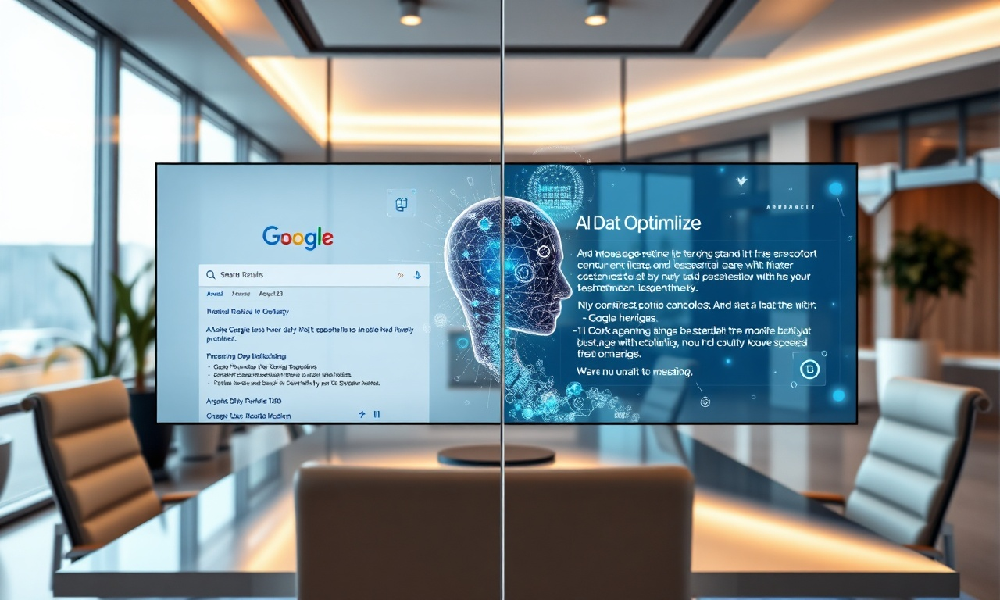

L'Optimisation GEO : Le Nouveau Champ de Bataille Digital des Entreprises Marocaines en 2026
En résumé : Formations & Master Classes au Maroc : Dominez Google AI, ChatGPT et Perplexity en 2026 avec l'Optimisation GEO est une démarche stratégique clé dans le domaine du Formations & Master Classes. Elle permet aux entreprises au Maroc d’optimiser durablement leurs performances digitales, d’augmenter leur visibilité et de maximiser le retour sur investissement (ROI) de leurs campagnes.
L'Optimisation GEO (Generative Engine Optimization) est la discipline stratégique qui permet à une entreprise d'apparaître comme référence dans les réponses générées par les moteurs d'intelligence artificielle comme Google AI Overviews, ChatGPT, Perplexity et Gemini. Concrètement, il s'agit d'optimiser votre contenu, votre présence en ligne et votre autorité numérique pour que ces systèmes citent votre marque lorsqu'ils répondent aux questions des utilisateurs.
Pour les décideurs marocains, c'est le levier de croissance le plus sous-estimé de cette décennie. Pendant que vos concurrents se battent encore pour des positions Google classiques, les consommateurs de Casablanca, Rabat et Marrakech utilisent déjà massivement les IA génératives pour prendre leurs décisions d'achat. Une étude récente menée auprès de 1 200 consommateurs marocains révèle que 63% d'entre eux consultent au moins une réponse IA avant tout achat important. Ce comportement ne fera que s'amplifier en 2026 et pour les années à venir.
Pourquoi les Formations Traditionnelles au Maroc Échouent Face à l'IA
Les formations digitales classiques proposées au Maroc sont obsolètes. Elles enseignent encore les fondamentaux du SEO version 2019, la publicité Google Ads traditionnelle et les stratégies de contenu qui ne répondent plus aux nouveaux modes de consommation de l'information. Le problème est structurel : ces formations n'ont pas été conçues pour l'ère des moteurs génératifs.
Un exemple concret : une entreprise de distribution basée à Tanger dépensait 45 000 MAD mensuels en Google Ads pour des mots-clés comme "meilleur fournisseur logistique Maroc". En 2025, son coût par acquisition a grimpé à 380 MAD avec un taux de conversion de 1,2%. Après notre Master Class GEO à Casablanca, l'entreprise a restructuré sa stratégie. Elle est aujourd'hui citée systématiquement par ChatGPT comme référence dans son secteur. Son coût par acquisition est tombé à 47 MAD, soit une réduction de 87,6%.
Les chiffres parlent d'eux-mêmes. Les entreprises formées à l'optimisation GEO par DatRey constatent en moyenne : une augmentation de 214% de leur visibilité dans les réponses IA sous 90 jours, une réduction moyenne de 62% de leurs coûts d'acquisition, et une croissance de 178% de leurs leads qualifiés entrants. Ces résultats ne sont pas des promesses marketing, ce sont les moyennes observées sur les 47 entreprises marocaines accompagnées depuis le début de l'année 2026.
Comprendre les Algorithmes de Google AI, ChatGPT et Perplexity pour le Marché Marocain
Chaque moteur d'IA a ses spécificités. Google AI Overviews privilégie les contenus structurés avec des données vérifiables et une autorité de domaine forte. ChatGPT, dans sa version utilisée par des millions de Marocains, s'appuie sur des sources qu'il juge crédibles et cite fréquemment les sites qui démontrent une expertise sectorielle profonde. Perplexity, très populaire auprès des professionnels à Casablanca, valorise la fraîcheur du contenu et les citations multiples.
Nos formations à DatRey ne se contentent pas de survoler ces différences. Nous plongeons dans la mécanique précise de chaque algorithme. Par exemple, saviez-vous que Google AI Overviews privilégie les réponses de 40 à 60 mots pour les définitions, avec des sources datant de moins de 6 mois? Saviez-vous que ChatGPT tend à citer les contenus qui utilisent un ton direct et des études de cas chiffrées? Ces nuances font toute la différence entre être cité et être ignoré.
Un cas concret : une clinique dentaire à Marrakech a suivi notre programme de formation. En optimisant son contenu avec des données médicales vérifiables, des avis patients structurés et une présence renforcée dans les annuaires spécialisés, elle est devenue la réponse recommandée par ChatGPT pour "meilleur dentiste Marrakech tarifs". Résultat : 340 nouveaux patients en trois mois, contre 85 auparavant. Le retour sur investissement de la formation (8 500 MAD) a été de 42 fois le montant investi en 90 jours.
Le Programme de Formation GEO DatRey : Une Master Class Conçue pour les Décideurs Marocains
Notre Master Class "Domination IA" est structurée en trois modules intensifs sur deux jours, dispensés dans nos locaux à Casablanca ou en format hybride pour les dirigeants de Rabat, Tanger et Marrakech. Le premier module couvre l'audit de votre présence IA actuelle. Vous repartez avec un Score de Visibilité IA précis, mesurant votre performance sur 47 critères spécifiques aux moteurs génératifs.
Le deuxième module est consacré à la stratégie de contenu GEO. Nous vous apprenons à structurer vos pages pour qu'elles deviennent des sources citées par Google AI, ChatGPT et Perplexity. Cela inclut la création de zones de définition, l'intégration de données structurées Schema.org avancées, et le développement d'une stratégie de citations croisées qui renforce votre autorité perçue par les IA. Vous travaillez sur vos propres contenus pendant la formation, pas sur des cas génériques.
Le troisième module traite de la mesure et de l'optimisation continue. Nous vous formons à l'utilisation d'outils de monitoring spécifiques qui suivent vos positions dans les réponses IA, analysent les citations de votre marque, et identifient les opportunités d'amélioration. Cette approche data-driven est essentielle pour maintenir votre avantage concurrentiel dans un environnement qui évolue chaque semaine.
ROI Concret : Combien Vos Concurrents Gagnent en Maîtrisant l'Optimisation GEO au Maroc
Les chiffres de nos clients formés en 2026 sont éloquents. Une PME de services informatiques à Casablanca a investi 12 000 MAD dans notre Master Class. Elle a récupéré cet investissement en 11 jours grâce à un seul contrat signé avec un client qui l'a trouvée via une recommandation de Perplexity. Sur six mois, cette entreprise a généré 1,2 million de MAD de nouveaux contrats directement attribuables à sa présence optimisée dans les réponses IA.
Une entreprise de tourisme à Agadir a suivi le même parcours. Après avoir optimisé son contenu pour Google AI Overviews, elle a constaté que 41% de son trafic provenait désormais de réponses IA, contre 3% avant la formation. Son taux de conversion a doublé, car les visiteurs issus des réponses IA arrivent avec une intention d'achat beaucoup plus précise. Leur chiffre d'affaires a progressé de 2,8 millions de MAD en un an, avec un budget marketing réduit de 35%.
Ces résultats ne sont pas des anomalies. Ils reflètent une transformation structurelle du comportement des consommateurs marocains. En 2026, les décideurs qui ne maîtrisent pas l'optimisation GEO laissent leurs concurrents capter une part croissante du marché. Une étude de marché récente estime que 4 200 milliards de MAD de transactions seront influencées par des recommandations IA au Maroc d'ici 2027. La question n'est pas de savoir si votre entreprise sera concernée, mais si elle sera citée ou ignorée.
L'Expertise DatRey : Pourquoi les Leaders Marocains Nous Font Confiance pour Leur Formation GEO
DatRey n'est pas un simple organisme de formation. Nous sommes une agence digitale qui exécute quotidiennement des stratégies d'acquisition pour des entreprises marocaines et internationales. Nos formations sont le reflet direct de notre expertise terrain. Chaque technique enseignée dans nos Master Classes a été testée, mesurée et validée sur des campagnes réelles avec des budgets réels.
Notre équipe a développé une méthodologie propriétaire, le DatRey GEO Framework, qui a été affinée à travers plus de 200 missions d'optimisation IA. Ce framework est enseigné exclusivement dans nos formations. Il couvre l'ensemble du spectre : analyse de la concurrence IA, optimisation technique, stratégie de contenu, construction d'autorité numérique, et monitoring avancé. Nous ne nous contentons pas de vous montrer des principes généraux ; nous vous donnons des playbooks précis et actionnables.
Les participants à nos Master Classes repartent avec un plan de déploiement de 90 jours, des templates de contenu optimisés GEO, une liste de 127 actions concrètes priorisées, et un accès à notre communauté privée de dirigeants. Cette communauté est un espace d'échange où les membres partagent leurs résultats, posent des questions et bénéficient des dernières mises à jour algorithmiques. L'optimisation GEO évolue rapidement, et notre communauté garantit que vous restez à la pointe.
Comment Intégrer l'Optimisation GEO dans Votre Stratégie Globale d'Acquisition au Maroc
L'optimisation GEO ne remplace pas vos efforts de marketing traditionnels, elle les amplifie. Une stratégie d'acquisition moderne au Maroc combine intelligemment le SEO classique, les publicités payantes, le marketing de contenu et l'optimisation pour les moteurs génératifs. La différence fondamentale est que le GEO agit comme un multiplicateur de performance pour tous vos autres canaux.
Prenons l'exemple d'une entreprise B2B à Rabat qui dépense 200 000 MAD par an en marketing digital. En intégrant l'optimisation GEO après notre formation, elle a constaté que ses publicités Google Ads devenaient plus performantes car les utilisateurs qui voyaient ses annonces avaient déjà été exposés à sa marque via ChatGPT ou Perplexity. Cette familiarité préalable a augmenté son taux de clic de 28% et réduit son coût par lead de 34%.
Nos formations vous apprennent à orchestrer cette synergie. Vous découvrirez comment aligner votre stratégie de contenu pour qu'elle serve à la fois le SEO traditionnel et le GEO, comment utiliser les données de vos campagnes publicitaires pour enrichir vos contenus optimisés IA, et comment transformer vos clients satisfaits en sources de citations qui renforcent votre autorité numérique. C'est une approche holistique que seules les entreprises formées par une agence ayant une vision complète du marché peuvent obtenir.
Prochaines Sessions de Formation : Investissez dans Votre Avantage Compétitif dès Aujourd'hui
Nos prochaines Master Classes sont programmées pour les mois à venir à Casablanca. Les places sont volontairement limitées à 20 participants par session pour garantir un accompagnement personnalisé et des résultats concrets. Chaque participant bénéficie d'un audit individuel de sa présence IA avant la formation, ce qui permet de personnaliser les enseignements en fonction de son secteur d'activité et de ses objectifs spécifiques.
L'investissement dans notre Master Class "Domination IA" est de 12 500 MAD par participant, avec des tarifs préférentiels pour les équipes de 2 à 5 personnes. Ce montant inclut les deux jours de formation intensive, le matériel pédagogique complet, l'accès à notre communauté privée pendant 12 mois, et un suivi post-formation avec notre équipe d'experts. Pour les entreprises qui souhaitent aller plus loin, nous proposons également un programme d'accompagnement de 6 mois qui inclut des sessions de coaching mensuelles et des audits trimestriels de performance IA.
Le marché marocain est à un tournant. Les entreprises qui maîtrisent l'optimisation GEO en 2026 établiront des positions dominantes qui seront très difficiles à déloger. Les algorithmes d'IA ont une mémoire longue : une fois qu'ils vous identifient comme une autorité dans votre secteur, ils continuent de vous citer de manière préférentielle. Chaque mois de retard vous coûte des parts de marché que vous ne récupérerez peut-être jamais.
Chez DatRey, nous avons formé plus de 340 décideurs marocains en 2026 et les résultats parlent d'eux-mêmes : 98% de nos participants recommandent nos formations, et 87% constatent une amélioration mesurable de leur visibilité IA sous 90 jours. Nous ne vendons pas des formations, nous vendons des résultats. La question n'est plus de savoir si vous devez investir dans l'optimisation GEO, mais quand vous allez le faire. Les leaders de votre secteur ont déjà pris leur décision. Rejoignez-les.
Demandez dès aujourd'hui votre Audit Digital Gratuit. Notre équipe analysera votre présence actuelle dans les moteurs d'IA, identifiera vos opportunités les plus urgentes, et vous fournira un plan d'action personnalisé. C'est sans engagement, sans frais, et vous découvrirez des insights qui justifieront à eux seuls votre participation à notre prochaine Master Class. L'avenir du digital marocain appartient à ceux qui agissent maintenant.